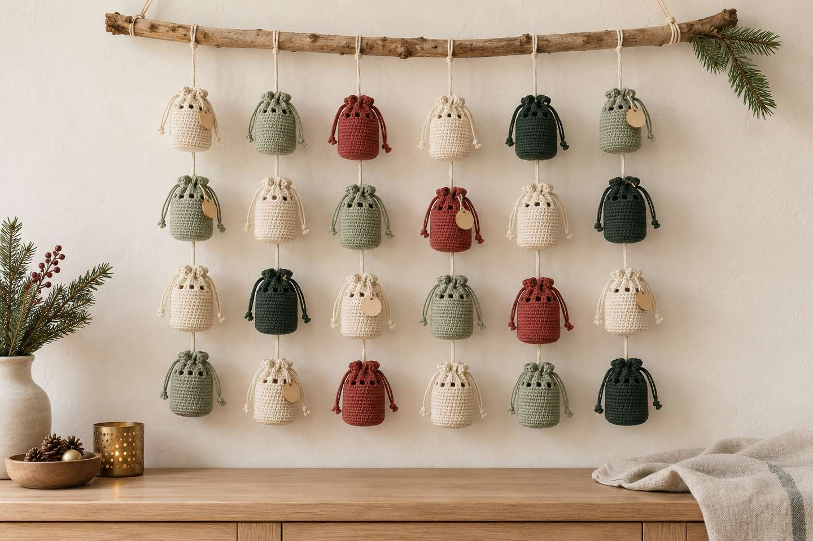
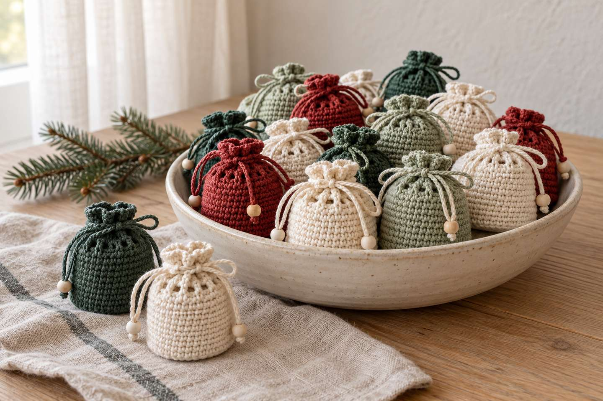
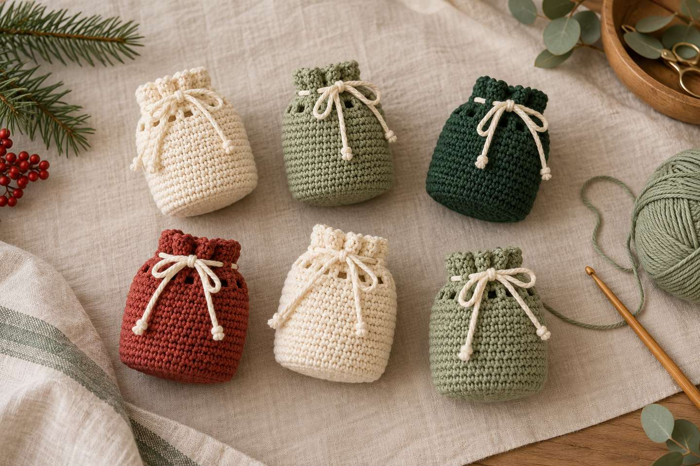
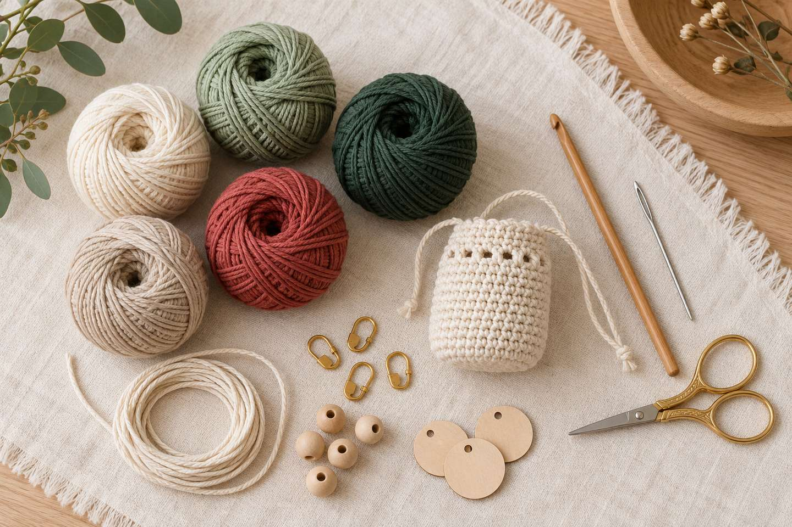
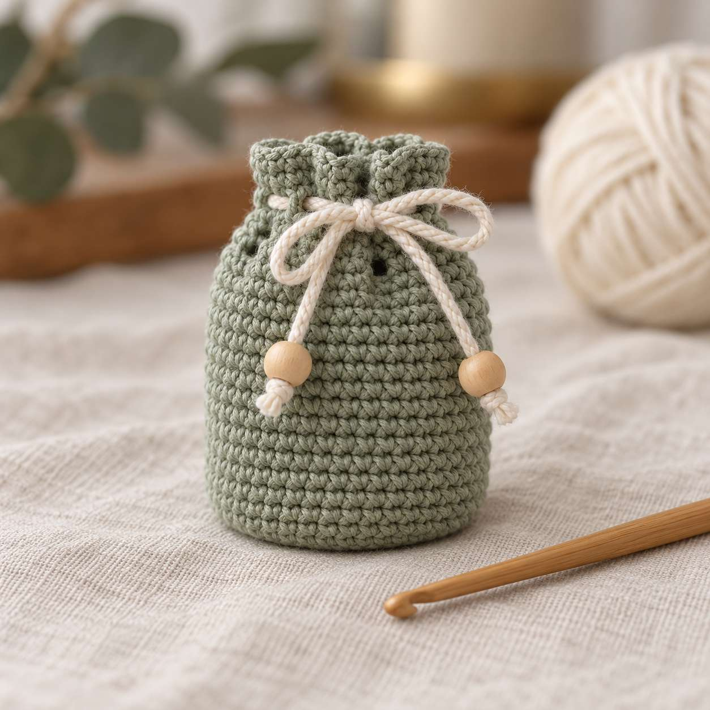
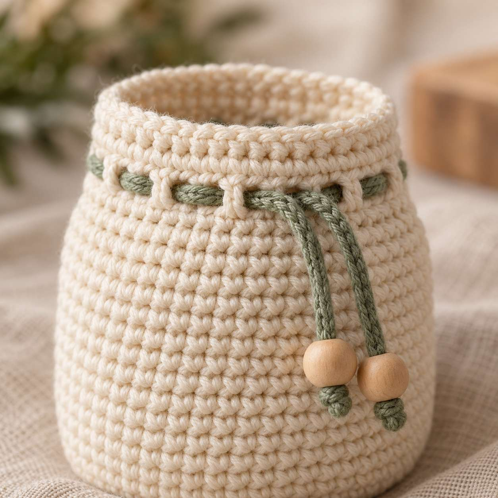
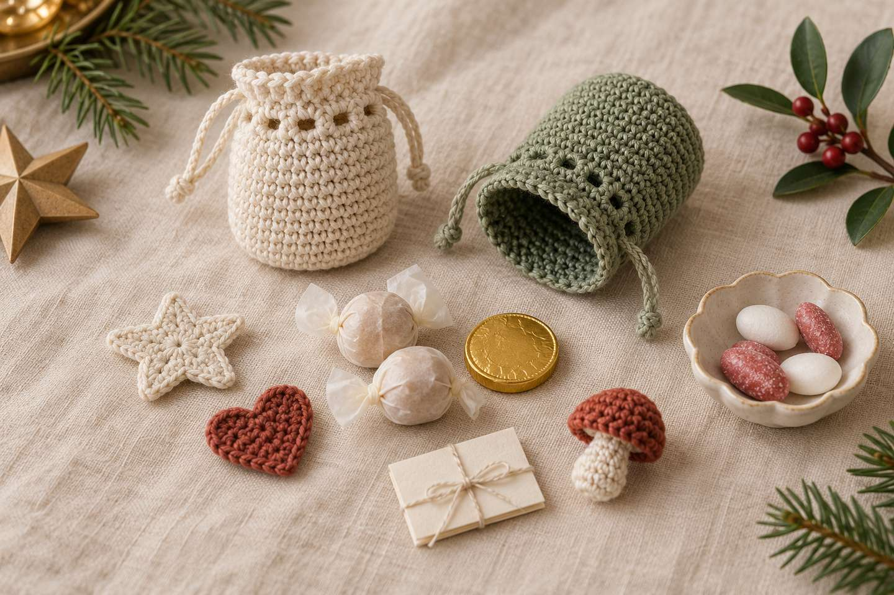

Crochet Advent Calendar: 24 Pouches to Fill – Free Pattern, Schedule and Ideas

In short
A crochet advent calendar made of 24 little pouches is doable by December 1: each pouch is just single crochet in rounds plus an eyelet round for the drawstring. With cotton yarn and a 3 mm (C/D) hook, it comes out about 2 in (5 cm) wide and 2.5 in (6–7 cm) tall (approximate). Crochet roughly one pouch a day starting now and your calendar will be ready in time. Below you'll find the free pattern with stitch counts, a schedule and 24 ideas for filling them.
November starts tomorrow – the perfect time to crochet an advent calendar. Handmade calendars are having a moment: several yarn brands offer their own crochet advent calendar kits for 2026. But you don't need a kit: with a few balls of cotton yarn you can crochet 24 little pouches to fill again every year. In this post you'll get the pattern, a schedule and filling ideas.
1. Why are crochet advent calendars so popular right now?

Crochet advent calendars now come in many forms. Three examples from the market show the range (see sources):
| Example | What you make | Level (per seller) |
|---|---|---|
| Hobbii “Moments of Hygge” (2026) | Four projects, one per Advent Sunday, with yarn for each | Intermediate |
| Rico “Ricorumi Advent Advent” | Small Christmas decor such as a candle, wreath, pinecones and acorns from 24 boxes | Not stated |
| Gründl crochet advent calendar | A nativity scene of 12 amigurumi figures in 24 days | Experienced and new crocheters |
All three are calendars to crochet from. This post flips it around: you crochet the calendar itself and fill it for someone – or for yourself. The perks:
- Reusable: the pouches last for years and replace paper bags.
- Scrap-friendly: each pouch takes only a little yarn.
- Simple: just magic ring, single crochet, increases and chains – all in the crochet basics.
2. Can I make 24 pouches by December 1?

Yes, if you start now. As a rough guide, one pouch takes 30–45 minutes, so all 24 take about 12–18 hours. From November 1 to 30 you have 30 days – just under one pouch a day, plus a few buffer days.
| Dates | Goal | Done |
|---|---|---|
| Nov 1–7 | Pouches 1–6, choose your colors | 6 |
| Nov 8–14 | Pouches 7–12 | 12 |
| Nov 15–21 | Pouches 13–18 | 18 |
| Nov 22–28 | Pouches 19–24 | 24 |
| Nov 29–30 | Drawstrings, numbers, fill, hang | Calendar ready |
Tip: Count your finished pouches in the stitch counter – you'll always see how many are done.
3. Which colors work for an advent calendar?

For a calm, natural look, go with cream, forest green, sage and a warm red – much like my Christmas crochet 2026 post. Three ideas:
- Cream
- Forest green
- Sage
- Christmas red
- Gold
- Oatmeal
- Tonal: all 24 pouches in cream, only the drawstrings in red.
- Alternating: green, red and cream in turn – eight pouches per color.
- Scrappy: every pouch different, with matching gold drawstrings.
Pattern: advent calendar drawstring pouch

- Size
- approx. 2 in (5 cm) wide, 2.5 in (6–7 cm) tall
- Time
- approx. 30–45 minutes per pouch
- Level
- beginner (magic ring, single crochet, increases, chains)
- Yarn
- cotton yarn, sport/DK weight; amount see tip below
- Supplies
- 3 mm (C/D) hook, stitch marker, tapestry needle, scissors; number tags or contrast yarn for embroidery
Abbreviations (US terms)
MR = magic ring · sc = single crochet · inc = increase (2 sc in one stitch) · ch = chain · sl st = slip stitch · BLO = back loop only · sk = skip. Find every abbreviation in the abbreviations guide. You work in continuous rounds – place a stitch marker in the first stitch of each round.
Pouch (make 24)
- Round 1: 6 sc in MR (6)
- Round 2: inc 6 times (12)
- Round 3: (1 sc, inc) 6 times (18)
- Round 4: (2 sc, inc) 6 times (24)
- Round 5: (3 sc, inc) 6 times (30)
- Round 6: 1 sc BLO in each stitch – this creates the base edge (30)
- Rounds 7–16: 1 sc in each stitch (30)
- Round 17 (eyelet round): (1 sc, ch 1, sk 1) 15 times (15 sc + 15 ch = 30)
- Round 18: 1 sc in each sc and 1 sc in each ch-1 space (30)
- Round 19: 1 sc in each stitch, finish with 1 sl st in the next stitch (30)
Fasten off and weave in the end. Bigger pouches (approx. 2.5 in / 6 cm wide): after round 5, work one more round of (4 sc, inc) 6 times (36); then keep all rounds at 36 stitches and repeat the eyelet pattern 18 times.

Drawstring, number and hanging
- Drawstring: crochet a chain about 14 in (35 cm) long (or use ribbon or cord) and thread it through the eyelet round with a tapestry needle.
- Knot the ends or add a small wooden bead to each so the string doesn't slip out.
- Number: tie a number tag to the drawstring or embroider the number in a contrast color.
- Hang: tie the pouches to a branch, a string or a wreath – or simply pile them in a bowl.
24 ideas for filling the pouches

Pouches this size fit small, flat things. Mix crocheted minis with treats and experiences:
| Crocheted | Treats | Experiences |
|---|---|---|
| Mini star ornament | Chocolate truffle | Voucher: movie night |
| Little heart | Mini gingerbread | Voucher: breakfast in bed |
| Mini Christmas tree (pattern) | Candied almonds | Favorite recipe card |
| Mini mushroom (pattern) | Tea bag (folded) | Riddle or joke |
| Mini granny square coaster | Marzipan ball | Voucher: a walk together |
| Hair tie with crochet edge | Chocolate coin | Photo with a memory |
| Chain-stitch bookmark | Candy | Voucher: game night |
| Keychain | Nuts | A little letter |
That's 24 ideas – eight per column. For kids, riddles, stickers and small toys work well; watch out for small parts with toddlers.
More for the holiday season
Keep reading: Christmas crochet 2026 with a mini tree, the granny square blanket as a big winter project and the 6 essential crochet tools. Just learning to crochet? Start with the learning path.
What about you? Who are you crocheting your advent calendar for? Show me your pouches on Instagram or TikTok! 🎄
Frequently asked questions about crochet advent calendars
How long does a crochet advent calendar take?
As a rough guide, one pouch takes 30–45 minutes, so all 24 take about 12–18 hours. Start in early November, crochet about one pouch a day, and the calendar will be ready by December 1.
What yarn is best for advent calendar pouches?
Medium-weight cotton yarn (sport or DK) with a 3 mm hook. Cotton holds its shape, sheds little and is washable. Weigh your first pouch and multiply by 24 to know how much yarn you need.
How big are the pouches?
With cotton yarn and a 3 mm hook, about 2 in (5 cm) wide and 2.5 in (6–7 cm) tall (approximate). For about 2.5 in (6 cm) wide, add one more increase round to 36 stitches.
What can I put in an advent calendar?
Small, flat things: crocheted minis such as stars, hearts or a mini Christmas tree, chocolates, folded tea bags or vouchers for time together. Watch out for small parts with toddlers.
Can I reuse the advent calendar every year?
Yes. Cotton crochet pouches are sturdy and can be refilled every year. Store them somewhere dry after Christmas, ideally together with the number tags.